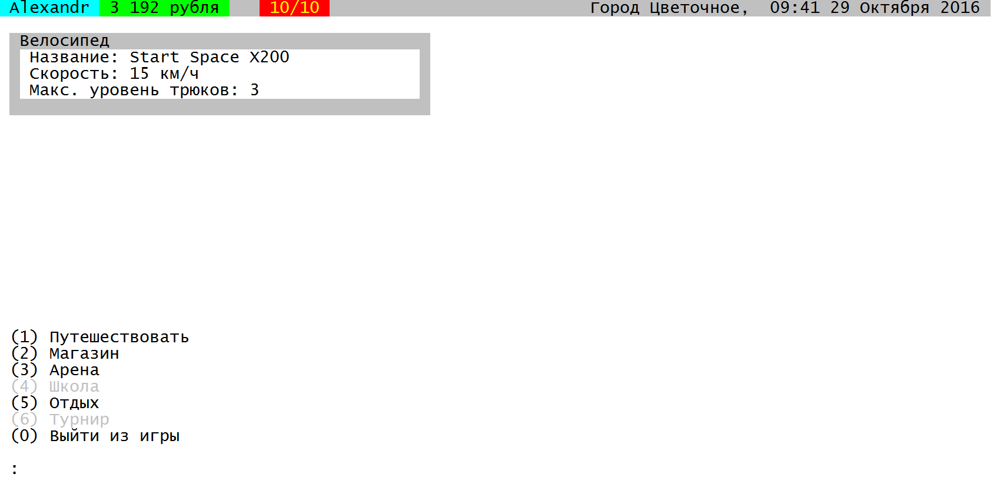

Biker 1
| Biker 1 | |
|---|---|
|  | |
| Главный экран | |
| Франшиза Biker | |
| Предыдущая игра | Biker 0 |
| Следующая игра | Biker 2 |
| Разработка | |
| Статус | Не поддерживается |
| Разработка | Сентябрь 2017 — 24.10.17 |
| Последняя версия | VA11 от 24.12.17 |
| Написан на | PascalABC.NET 3.3 |
| Платформы | Windows 7 |
| Дополнительно | |
| Консоль | CMD |
| Инсталлятор | Отсутствует |
| Модификации | Единофайловая карта позволяет заменить её |
| Статистика | |
| Строк кода | .pas: 2336 |
Biker 1 — продолжение моего развития как программиста. Увеличение масштаба, уменьшение приколов. Для этой игры разработана большая карта в 154 населённых пункта, разделённых на 7 типов, от которых зависило для городов то, что было вручную описано кодом в Biker 0: наличие магазинов велосипедов, каскадёрских школ и арен. Теперь выполнить можно 5 трюков за раз, а отдохнуть прямо в городе.
Описание
Награды за трюки были огромны: даже за легчайшие трюки средняя награда числилась в среднем в 600 рублей, а за самые сложные - больше сотни тысяч. Это было одной из главных причин заняться балансом в моей новой игре, но об этом позже.
Велосипед в новой игре не изменился с предыдущей игры, однако изменилась его покупка, а также добавилась новая характеристика — максимальный уровень трюков. Поскольку теперь карта не представляла собой нечто абстрактное, скорость велосипеда напрямую влияла на то, насколько быстро вы перемещаетесь между городами на нём. К слову, перемещаться теперь можно было и на самолёте, а в дань предыдущей игре были добавлены и поезда. Однако, дороги перестали иметь разделение на шоссе и просёлочные, а велосипед больше не получал повреждений. Купить новый велосипед со случайными характеристиками можно почти везде, но заказать по-настоящему стоящий велик можно было только в столице и окружных центрах, коих в сумме было всего 5 на 154. Кроме того, велосипед теперь можно и продать.
Было добавлено время, которого не было в прошлой игре. К времени ничего не привязано, кроме магазинов. Магазины работали только днём, а диапазон работы зависел от типа населённого пункта. В ином смысле понимание какое в игре время помогает в погружении, какой бы простой по сути не была эта фича. При начале новой игры теперь можно было выбрать ник, дату и точку появления (случайно, но изменяемо).
Ну и конечно же заметно приобразилась графика, по прежнему состоящая из консольного интерфейса. Был увеличен размер и добавлена верхняя полоска, на которой были написаны ник, деньги, время и местоположение. Для характеристик велосипеда добавлено небольшое окошко, а также было введено интерфейсное правило, серьёзно упрощавшее работу с ним — нажатие 0 возвращает всегда назад. Привыкнув к этому, можно очень быстро переключаться между менюшками игры.
Обновление 1.1
Практически сразу я начал работу над обновлением. Самым главным нововведением была энергия. Теперь вместо траты абстрактного числа трюков, у игрока есть конкретное число действий (10). Кроме того, трата их во время перемещений на велосипеде вынуждает игрока отдыхать, восстанавливая силы, что добавило реализма. Были уменьшены награды за трюки, цены на заказные велосипеды, а также стоимость обучения новым трюкам.
Для поощрения путешествий игрока, добавлен недельный x3 бонус в случайных нас. пунктах (кроме окружных центров и столицы), однако трата энергии в этих местах увеличена в два раза. Учитывая, что отдых восстанавливает энергию полностью, для игрока это незаметная балансная правка.
Ну и сам играя в игру, я не мог не заметить насколько выбешивает ожидание обучения и отдыха, именно поэтому я решил увеличить скорость этих "анимаций".
В некоторых посёлках, сёлах, пгт и городах появляется x3 награда за трюки * Смена этого пункта происходит каждое 7,14,21 и 28-ое число месяца * При проведении трюках в таких пунктах тратится вдвое больше энергии * Если энергии было всего 1, то коэффициент понижается до x1,5 Заказ велосипеда теперь идёт в три раза быстрее Обучение новым трюкам идёт в три раза быстрее Переработана экономика, теперь она более плавная и реалистичная * Стоимость проезда на поезде и самолёте уменьшена * Переработана экономика арены Добавлены настройки: * Показателя энергии: шкала/текст * Автосохранения: вкл/выкл Добавлена система энергии: * Энергия тратится при перемещениях на велосипеде и действиях на арене * Энергия восстанавливается при отдыхе Исправлена ошибка интерфейса в окне заказа велосипеда Если у вас не было велосипеда до заказа, то теперь он у вас появится Теперь если купить заказной велосипед, деньги за старый будут вам начислены Время отдыха приведено к одному значению Исправлен баг, связанный с неправильным расположением вариантов на аренеТекст обновления